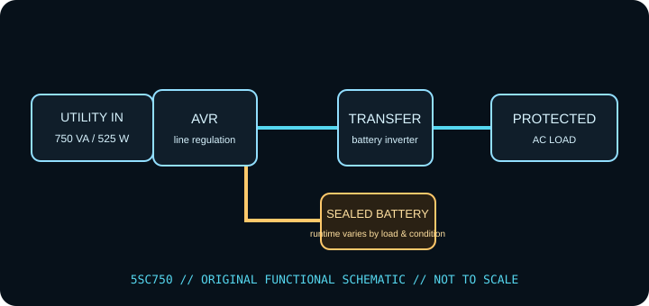

[ LINE-INTERACTIVE UPS // IDENTIFIED MODEL ]
Eaton 5SC750
Eaton line-interactive AVR UPS, rated 750 VA / 525 W. This record describes the identified regional model only. Check the complete nameplate, hardware revision and matching manufacturer documentation before installation or load selection.

ARCHIVAL IDENTIFICATION: Record complete SKU/suffix, input/output labels, serial/date code, hardware revision, battery type/age, accessories, test conditions and manual revision. Similar model names do not establish electrical equivalence.
Exact model specifications
| Manufacturer / exact model | Eaton 5SC750 (North American model record; verify complete SKU, revision and serial/date label). |
|---|---|
| Topology | Line-interactive UPS with automatic voltage regulation (AVR); supported input fluctuations may be corrected without battery transfer. This is not a standby-only or online double-conversion unit. |
| Capacity / input | 750 VA / 525 W; 120 V AC nominal North American model; verify input connector and regional suffix from the unit nameplate. VA and W are separate limits; stay under both. |
| AC output / waveform | Configurable nominal output in the 5SC family; North American model set to 120 V. Pure sine-wave output on battery as specified for the 5SC series. |
| Outlets / load assignment | Six NEMA 5-15R outlets on the North American version. Confirm battery-backed outlet arrangement on the rear-panel label and exact manual; do not infer it from other 5SC variants. |
| Battery chemistry / service | Internal sealed lead-acid battery, serviceable only by following Eaton’s 5SC replacement procedure. No hot-swap assumption; isolate as directed by the manual. |
| Runtime / test conditions | Consult Eaton’s 5SC750 runtime graph for the actual load. The manufacturer provides model-specific load curves; actual runtime depends on charge, temperature, battery age and load power factor. Runtime tests should record connected watts, charge state, battery age/health, temperature and test date. |
| Host signaling / software | USB HID and serial/RS-232 management interfaces are specified for the family; Eaton software and native OS behavior vary. Confirm port configuration and supported host software for the exact suffix. |
| Load compatibility | Suitable only for loads within 750 VA / 525 W and the selected output voltage. Sine output broadens PSU compatibility but does not override the equipment maker’s voltage, grounding or startup-current requirements. |
Safety, service & limits
- Use only with the grounded voltage/frequency and environment allowed by the complete unit label and current model manual. Never defeat grounding or daisy-chain UPS outputs.
- Do not connect heaters, laser printers, motors or other high-inrush loads unless the manufacturer expressly permits them and their steady-state and startup demand remain within the UPS limits.
- Do not open an energized UPS or work on battery terminals. Sealed lead-acid batteries can deliver destructive fault current; avoid short circuits, damaged/swollen/leaking cells and unapproved replacements. Follow the manufacturer isolation, service and recycling directions.
- Remove damaged equipment from service if the case, cord, plug, grounding, outlet, battery or indicator shows heat, swelling, leakage, cracking, odor, corrosion or other fault. Follow the maker’s safe shutdown guidance.
- Keep ventilation clear, protect the unit from liquid and excessive heat, and test host shutdown and runtime under a controlled load. Battery backup is finite and is not a substitute for code-compliant wiring or an independent data backup.
Manufacturer sources and documentation
- Eaton — 5SC750 specificationsManufacturer information for the named model; confirm revision and regional suffix on the actual unit. Original page is gone; this is the Internet Archive’s copy.
- Eaton Knowledge Hub — 5SC UPS user manualManufacturer information for the named model; confirm revision and regional suffix on the actual unit.
- Eaton Knowledge Hub — 5SC technical specificationsManufacturer information for the named model; confirm revision and regional suffix on the actual unit.